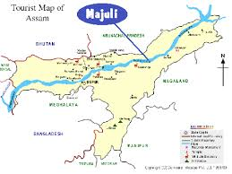

Majuli island is amid the mighty Brahmaputra River and is said to be the largest river island of the world. Majuli flaunts unparalleled scenic views which tend to disappear during monsoon as the island gets dominated by the river. Best time to visit –Throughout the Year. November being the best month
Map:
